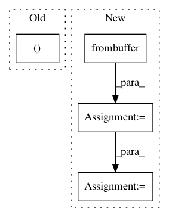

bec15911e08fe5fe3c705c24a23cfd926cc0da95,service.py,LabelService,label,#LabelService#Any#,33
Before Change
A (most likely label, probability) tuple
output = self.sess.graph.get_tensor_by_name("labels_softmax:0")
predictions, = self.sess.run(output, {"wav_data:0": wav_data})
return (self.labels[np.argmax(predictions)], max(predictions))
After Change
Returns:
A (most likely label, probability) tuple
wav_data = np.frombuffer(wav_data, dtype=np.int16) / 32768.
model_in = model.preprocess_audio(wav_data, 40, self.filters).unsqueeze(0)
model_in = torch.autograd.Variable(model_in, requires_grad=False).cuda()
predictions = F.softmax(self.model(model_in).squeeze(0).cpu()).data.numpy()
return (self.labels[np.argmax(predictions)], max(predictions))
def set_speech_format(f):
In pattern: SUPERPATTERN
Frequency: 3
Non-data size: 4
Instances
Project Name: castorini/honk
Commit Name: bec15911e08fe5fe3c705c24a23cfd926cc0da95
Time: 2017-10-05
Author: tang.raphael@gmail.com
File Name: service.py
Class Name: LabelService
Method Name: label
Project Name: ray-project/ray
Commit Name: ef498e8aa5cdfe09247d9c9efc7ef636378165c2
Time: 2020-05-15
Author: ed.nmi.oakes@gmail.com
File Name: python/ray/serve/policy.py
Class Name: PowerOfTwoPolicy
Method Name: flush
Project Name: librosa/librosa
Commit Name: d8ab8131e19498c2b9bed8d218e4e46eedc7cf21
Time: 2012-10-20
Author: brm2132@columbia.edu
File Name: librosa/tf_agc.py
Class Name:
Method Name: tf_agc